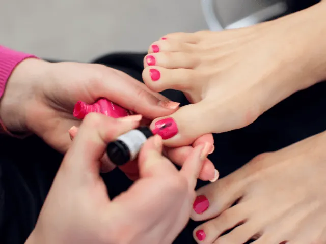
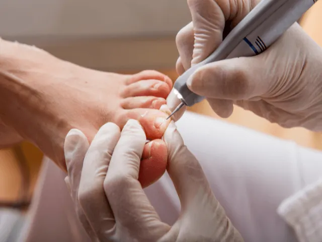
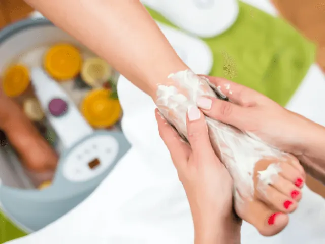

Zorg voor je voeten: Het belang van pedicure voor diabetici in Nijmegen
Gepubliceerd op 18 augustus 2023, bijgewerkt op 26 februari 2024
Onderdeel van de gids Pedicure in Nijmegen

Als je denkt aan zelfzorg, is het begrijpelijk dat je voeten niet meteen bovenaan je lijstje staan. Maar voor diabetici is voetverzorging van cruciaal belang. Waarom? Omdat voetproblemen bij diabetes vervelende gevolgen kunnen hebben. En dat geldt eigenlijk voor iedereen. In deze blog ontdek je waarom dit geen overbodige luxe is, maar een essentieel onderdeel van je gezondheidsroutine.
De beste vriend van je voeten in Nijmegen!
Stel je voor: je wandelt door de charmante straten van Nijmegen, genietend van de prachtige omgeving. Je voeten voelen vermoeid en pijnlijk aan. Maar geen zorgen, de beste vriend van je voeten voor diabetici is hier om je te helpen – de pedicure! Met hun deskundige handen en professionele aanpak zorgen ze ervoor dat je voeten zich weer als herboren voelen. Maar wist je dat een pedicure meer doet dan alleen je voeten verwennen? Vooral voor diabetici is het een onmisbaar onderdeel van hun gezondheidsroutine.
Veiligheid voorop: Pedicure voor diabetici in Nijmegen
Je voeten zijn kostbaar, vooral als je diabetes hebt. Gelukkig begrijpen de medische pedicures in Nijmegen dat als geen ander. Ze zijn speciaal opgeleid om rekening te houden met de unieke behoeften van diabetische voeten en elke andere voet. Naast het knippen van je nagels en verwijderen van eelt, controleren ze ook op wondjes, zweren en infecties. Bovendien kunnen ze waardevol advies geven over de dagelijkse verzorging van je voeten. Genoeg reden om eens in de zoveel tijd langs te gaan.

Verwen je voeten
Bij de pedicure draait het niet alleen om professionele zorg, maar ook om ontspanning en verwennerij. Het team van deskundige pedicures zorgt ervoor dat je je op je gemak voelt, terwijl ze met aandacht je voeten verzorgen. Met hun vriendelijke benadering creëren ze een aangename sfeer waarin je kunt genieten van je behandeling en tegelijkertijd de gezondheid van je voeten verbetert.
Over welke pedicures in Nijmegen hebben we het dan?
We hebben vier goede pedicures – waar we op vertrouwen voor je op een rijtje gezet:
Pedicurepraktijk Ezgi Medisch Pedicure
Bij Pedicurepraktijk Ezgi Medisch Pedicure ben je aan het juiste adres voor uitstekende medische pedicurebehandelingen voor diabetici. Het team van professionals zorgt ervoor dat je voeten de zorg krijgen die ze nodig hebben. Klanten waarderen de nauwkeurigheid en het deskundige advies dat ze ontvangen bij Pedicurepraktijk Ezgi Medisch Pedicure.

Van Uden Voetverzorging
Bij Van Uden Voetverzorging kun je terecht voor persoonlijke en professionele voetverzorging. Ze bieden diverse behandelingen om je voeten gezond en verzorgd te houden. Het team van ervaren pedicures staat voor je klaar om je voeten te verzorgen en je advies te geven. Klanten waarderen de zorgvuldige behandelingen en het vriendelijke personeel van Van Uden Voetverzorging.
Pedicure de Voetsalon
Pedicure de Voetsalon is de plek waar je goede zorg kunt verwachten. Het ervaren team van pedicures biedt een breed scala aan behandelingen om je voeten gezond en verzorgd te houden. Klanten waarderen de grondige aanpak en de professionele service die ze ontvangen bij Pedicure de Voetsalon.

VerzorgdeVoet
VerzorgdeVoet staat garant voor hoogwaardige voetverzorging en aandacht voor detail. Hun team van professionals staat klaar om je voeten te verzorgen en je advies te geven over de juiste zorg. Klanten waarderen de deskundigheid en vriendelijkheid van het team van VerzorgdeVoet.
Conclusie
Hopelijk hebben we je kunnen overtuigen dat het verzorgen van je voeten erg belangrijk is. In Nijmegen hebben we genoeg pedicures die de perfecte combinatie van professionaliteit en aandacht voor detail hebben. Met de pedicure in Nijmegen geef je je voeten de zorg die ze verdienen, terwijl je ook geniet van een ontspannen en verwenmoment voor jezelf. Neem de controle over je voetgezondheid en geniet weer van lange wandelingen – zonder pijn aan je voeten – in de sprankelende binnenstad van Nijmegen.
OVERZICHT pedicures
BEKIJKPedicures in Nijmegen
Zin om te beginnen? In onze bedrijvengids vind je alle 18 pedicures in Nijmegen, met openingstijden, kenmerken en een kaart.
Bekijk alle 18 pedicures in Nijmegen
Heb je zelf een pedicure? Laat je hier uitlichten.